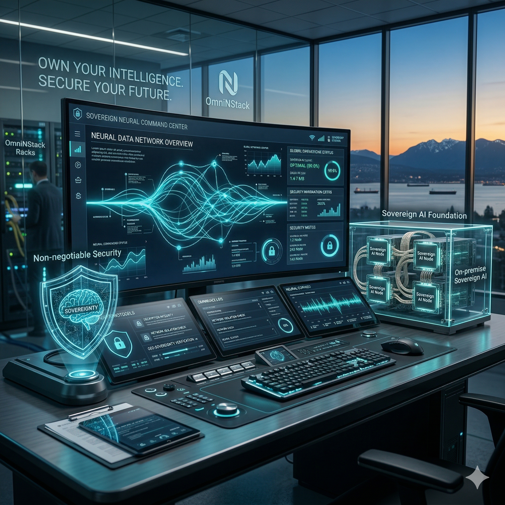

The AI Operations Platform
for Enterprise
Automation
OmniNStack helps companies replace repetitive work with AI-powered teams.
We build the proprietary platform that lets companies deploy AI-powered teams, automate workflows, and scale operations — running autonomous AI agents end-to-end on infrastructure you own, with absolute data sovereignty and zero vendor lock-in.

Proprietary Sovereign Stack
Public + Private LLM Gateway
Citation-Backed Agentic RAG
Identity-Aware Audit Trail
The Platform
One Platform to Deploy Your AI Workforce
Everything you need to put AI-powered teams to work — orchestration, knowledge, automation, and analytics in one proprietary system.
Multi-Agent Orchestration
Compose teams of autonomous AI agents that plan, delegate, and coordinate to complete real work — the cognitive engine that turns one instruction into an end-to-end operation.
Enterprise Knowledge Retrieval
A sovereign, air-gapped knowledge base that turns fragmented data into high-fidelity, citation-backed answers your agents can act on — without data ever leaving your network.
Workflow Automation
Automate repetitive, multi-step operations across your systems. A multi-model gateway routes each task to the right public or private LLM, with zero vendor lock-in.
Analytics & Audit
A live dashboard for every AI-powered team — measure throughput and outcomes, with immutable, identity-aware audit trails on every action agents take.
How It Works
From Repetitive Work to AI-Powered Teams
OmniNStack is the platform for enterprises that can't send their data to the cloud. You bring your data and workflows; the platform deploys AI agents that run them — entirely on infrastructure you own.
Connect Your Data
Ingest documents, databases, and live systems into a sovereign, air-gapped knowledge base — nothing ever leaves your network.
Configure Agents
Define the workflows you want automated and the policies they must follow. The platform assembles agents governed by Policy-as-Code.
Deploy AI Teams
Autonomous agents run repetitive work end-to-end — researching, drafting, routing, and acting across your systems in real time.
Audit Everything
Every action is logged with immutable, identity-aware auditing and citation-backed outputs you can trust and verify.
Technical Architecture
The Five-Layer Sovereign Stack
Presentation Layer
Unified Command Center for human-AI collaboration. Featuring Open WebUI, LibreChat, IMAMAPP Chat Interfaces, and native IDE Plugins for seamless dev-to-production workflows.
Governance Layer
Deterministic security using Policy-as-Code (OPA) and Immutable Identity-Aware Auditing. Non-negotiable data sovereignty and compliance enforcement.
Orchestration Layer
Cognitive "nervous system" managing Agentic Reasoning, IMAMAPP Omnichannel Routing, and Industrial AIoT Bridging—integrating real-time POS transactions and telemetry into decision loops.
Data Layer
Sovereign knowledge base with Air-Gapped RAG, secure Vector Stores, and a private object repository with semantic consistency checking.
Infrastructure Layer
Self-hosted hardware-agnostic foundation. Optimized for NVIDIA TensorRT / Apple MLX for server-grade inference on Edge and Air-Gap nodes.
Proprietary Innovation
Built on Original Research
OmniNStack is a product company. Our edge is technology we engineer ourselves — solving hard problems that off-the-shelf AI cannot, so the platform runs autonomously inside air-gapped enterprises.
Agent Coordination Engine
A proprietary multi-agent orchestration framework that lets autonomous agents plan, delegate, and self-correct reliably across long-running enterprise workflows.
Sovereign Memory & Retrieval
Original AI memory architecture and air-gapped retrieval systems that deliver high-fidelity, citation-backed knowledge entirely on-premise — no cloud, no leakage.
Edge Inference Optimization
Inference methods tuned for NVIDIA TensorRT and Apple MLX that bring server-grade model performance to edge and air-gapped hardware most platforms can't run on.
What the Platform Automates
AI-Powered Teams for the High-Trust Enterprise
Gov & Public Sector
Agents that automate zoning review, legislative analysis, and public-record synthesis — with pixel-perfect citations.
Healthcare Systems
Agents that automate clinical inference and administrative workflows — without PHI ever leaving your network.
Physical AI & Industrial
Agents that drive physical assets, edge robotics, and real-time analytics across industrial and resource sectors.
Conversational Marketing
Resilient cross-channel campaigns, AI copywriting, and direct in-store coupon redemption attribution for high-trust retail.
Learn More →Trust & Safety
Agents that catch context-dependent policy violations in community content — cutting false positives on quotes, satire, and counter-speech that keyword filters miss.
Learn More →Leadership Team
The Minds Behind OmniNStack
June Hong
Chief of Technology Officer, Co-founder
A seasoned Software Architect and Technical Leader with over 20 years of experience spanning embedded systems, cloud-native platforms, and AI-driven cyber-physical systems. June leads the engineering of OmniNStack's proprietary AI Operations Platform, applying a track record built at global technology leaders such as Samsung, NTT, and NEC. His work focuses on the agentic orchestration core that lets autonomous AI teams run enterprise workflows end-to-end, bridging software orchestration with Edge and Physical AI.
Hyunseung Lee
Principal Software Engineer & AI Scientist, Co-founder
A cross-disciplinary engineer specializing in the integration of advanced software orchestration with next-generation Physical AI hardware. Hyunseung builds the production-grade agentic and RAG systems at the heart of OmniNStack's platform — using LangGraph, Retrieval-Augmented Generation (RAG), and LangChain to turn the product into a robust, infrastructure-agnostic operating system for high-trust enterprise environments.
Joseph S. Yu
Ph.D., Principal Hardware Engineer & Physical AI Architect, Co-founder
An AI Architect with strategic expertise across the South Korea–North America technology corridor. Joseph drives the hardware and go-to-market strategy for OmniNStack's AI Operations Platform, leveraging deep insight into regional innovation ecosystems to expand the product across borders through technology alignment and market growth.
Intelligence is most powerful when it is owned.
OmniNStack is the AI Operations Platform that turns repetitive work into autonomous AI-powered teams — running on infrastructure you own, where organizational autonomy is guaranteed.
Contact Our Solutions Architects